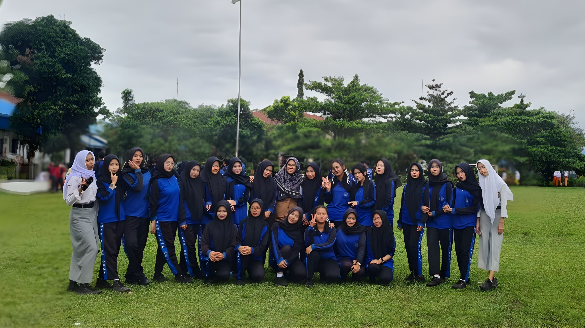
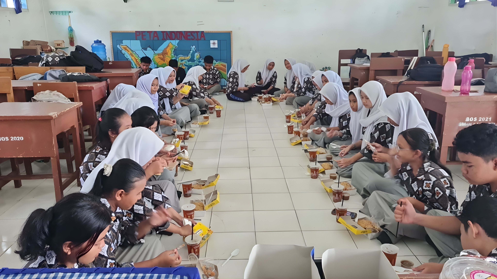
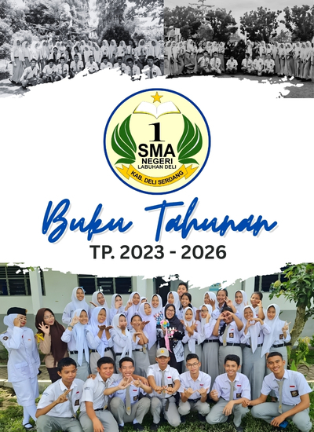
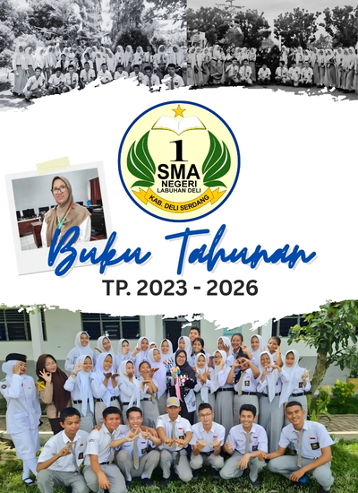

XII IIS-1 Angkatan 2026
✨
🎨
📎
Kelas XII IIS-1 ini ya.......
Kenangan Sekolah
"Tiga tahun sudah kita ukir bersama di sekolah ini. Tiga tahun penuh tawa, tangis, dan kenangan yang takkan pudar. Rasanya baru kemarin kita bertemu, kini kita harus berpisah. Perpisahan ini memang menyakitkan, meninggalkan lubang di hati yang terisi oleh kebersamaan kita. Tapi ingatlah, perpisahan ini bukan akhir, melainkan awal dari babak baru dalam hidup kita. Mungkin jalan kita akan berbeda, mungkin kita akan jarang bertemu. Namun, ikatan persahabatan kita akan tetap terjalin erat. Masa depan membentang luas di hadapan kita. Aku tahu, mungkin ada di antara kita yang merasa cemas dengan tantangan ekonomi, dengan biaya pendidikan yang tinggi. Tapi jangan pernah menyerah! Jangan biarkan keadaan ekonomi orang tua menjadi penghalang mimpimu. Ingatlah perjuangan orang tua kita, mereka ingin melihat kita sukses. Teruslah berjuang, kejar impianmu setinggi langit. Buktikan pada dunia bahwa kita bisa! Kita akan bertemu lagi suatu saat nanti, dengan cerita sukses masing-masing. Sampai jumpa, teman-teman terbaikku!"

Kita Bukan Kandung tapi lebih dari saudara

Kita tetap Bersama walau telah jauh

Kapan momen ini bisa kita ulang kembali
✨
Potret Kenangan
Kantin Sekolah
Lapangan Basket
Pesan & Kesan Guru
"Jadilah bintang yang paling terang di langitmu sendiri. Jangan pernah lupa pulang ke rumah ini."- Bapak Ahmad (Kepala Sekolah)

Salam Perjuangan
"Anak-anakku tersayang,- Ibu Dwi Kurniati (Wali Kelas-Mu)
Tiga tahun lalu, kalian datang ke kelas ini dengan wajah malu-malu dan seragam yang masih sangat rapi. Hari ini, Ibu melihat kalian berdiri di sini sebagai pribadi yang jauh lebih dewasa. Melihat kalian bersalaman untuk berpisah hari ini sungguh menyesakkan dada, karena bagi Ibu, kalian bukan sekadar nama di buku absen, melainkan keluarga.
Ibu tahu, di balik tawa kalian hari ini, ada kekhawatiran tentang hari esok. Ada yang mungkin merasa jalannya tertutup karena keterbatasan ekonomi keluarga. Dengarkan pesan Ibu:Perpisahan ini hanyalah jeda untuk kalian menjemput kesuksesan masing-masing. Pergilah, kejar pendidikan setinggi-tingginya. Jangan biarkan dompet yang kosong menghentikan otak yang cerdas dan tekad yang baja. Selamat berjuang, Anak-anakku. Doa Ibu selalu menyertai setiap langkah kalian.."
- Ekonomi bukan penentu takdir: Jangan pernah jadikan kondisi keuangan orang tua sebagai alasan untuk berhenti bermimpi. Banyak jalan menuju Roma, dan banyak beasiswa bagi mereka yang mau berusaha.
- Kehormatan Orang Tua: Cara terbaik kalian membalas keringat ayah dan air mata ibu adalah dengan tidak menyerah pada keadaan. Pendidikan adalah tangga untuk mengangkat derajat keluarga kalian.
- Teruslah Melangkah: Dunia di luar sana mungkin keras, tapi ingatlah bahwa kalian telah berhasil melewati tiga tahun yang hebat di sini. Kalian lebih kuat dari yang kalian bayangkan.
Salam Perjuangan
🏆 Wall of Fame 🏆
🥇
Si Paling Rajin
Andi Wijaya
😴
Duta Tidur
Budi Santoso
🎸
Rockstar Kelas
Siti Aminah
📸
Si Paling Eksis
Santi Diana
🥇
Si Raja Terlambat
Meira Lesmana
😴
Paling Cerewet
Caca
🎸
Politikus Ulung
Siti Aminah
📸
Si Paling Pemalu
Santi Diana
Peta Kenangan
Klik ikon untuk melihat momen di tempat itu!

🍜
Kantin
🏀
Lapangan
📚
Perpus
📸 Behind The Scene

Momen Seru 1

Momen Seru 2

Momen Seru 3